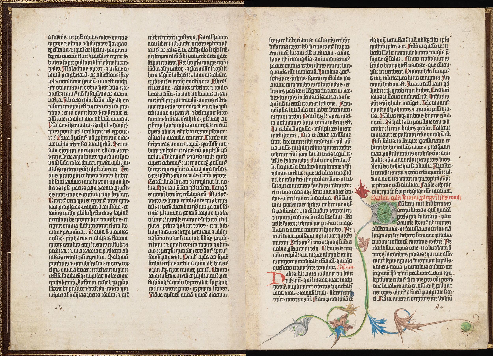

Invention
He was known for inventing the movable-type printing machine, leading to the circulation of printed books, which influences the later renaissance and religious reform.

Johannes Gutenberg (1390-1468)
Johannes Gutenberg was born in Rhine, German in 12th century. His involvement of invention was in his later years at around 1430s after his retirement at Strassburg.

Legacy
One of his known book would be the "Gutenberg Bible" (also known as the Forty-Two-Line Bible) which is believed to be the first full-scale printed book in Europe at the time.